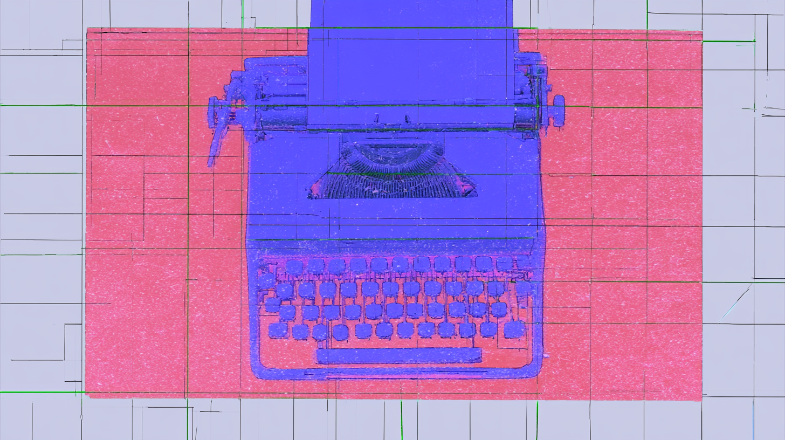

Today's Top ReadsThe day's three most essential reads, selected from the full sweep of music, culture, and industry coverage.
Essays · Analysis · Features
On the CoverFeatured on "‘Ignorance towards immigration is horrible. It’s not British’: Skepta on his long-awaited return – and his anger at the racist right"
Ben Cardew, who has covered Detroit techno for DJ Mag and Pitchfork and interviewed Atkins for Line Noise, marks the death of Juan Atkins with the kind of tribute that comes from having been in the room. The claim worth sitting with: that 1993 R&S comp Classics is as important as any Joy Division record, per a sincere NME review Cardew bought the album on. Includes the full Primavera-era interview, Atkins deflecting the "first techno record" myth and insisting, still, that he's a futurist.
Scott Reyburn walks a Wimbledon high street with data scientist Lauren Leek, whose Substack essay on cultural "temperature zero" caught Cory Doctorow's attention. Her sharpest evidence lands in territory you know: across 4,000-plus Billboard hits, distinct vocabulary shrank by a quarter since the early '60s while repeated lines jumped nearly a third. The reason is streaming math, pay starts at 30 seconds, so a hook you can loop is the rational move.
Billboard names manager James Vitalo (Gold Theory, also Knocked Loose) Executive of the Week for the logistics behind Turnstile's free Washington Monument show: 60,000 people, $260,000-plus raised for relief in Palestine, Sudan and Lebanon, within earshot of the White House. The interview is a case study in refusing to scale back. A band that just hit the top 10, won two Grammys and played SNL kept a landmark show free, betting that community can translate directly into humanitarian dollars.
01Music & SceneWriting about music and the culture around it. Criticism, profiles, interviews, and scene reporting, selected for insight rather than news value.
Dua Lipa hasn't released an album in two and a half years, yet her brand is stronger than ever. Track Ten argues the gap between album cycles is pop's most underrated tool for star-building: with attention off the music, reinvention reads as authentic rather than promotion. Dua has used the quiet to convert people who hum "Levitating" without knowing who sang it.
The Times' Popcast catches Lil Baby at a strange pivot: once the last rapper to hit superstardom before the industry swung away from hip-hop, he's now chasing the pop world, with "Dead Fresh" (his Pharrell collab) his first Top 40 solo hit since 2022. He admits he nearly quit, calls rap "like wrestling," and says he'll stop if he can't make hits.
At 44, Skepta reframes himself as a 'conscious' rapper on The Fork and Knife, his first solo album since 2019, out next week. The Guardian traces how his two-tone neck tattoo and a Suggs collaboration on Innocent Smile anchor a defense of multicultural Britain rooted in his dad's ska vinyl and Igbo-Yoruba parents, against the rising anti-immigrant right.
A dance album with no beats: Leo Chadburn and the Phaedra Ensemble reimagine Playford's 1651 folk-dance manual as a radiophonic suite where a malevolent narrator stretches "dance" across pets, glaciers and colloids. The Quietus reads its Castlemorton and Criminal Justice Act references as a meditation on movement as both free expression and state oppression, with Englishness itself positioned against far-right nationhood.
Smagghe and Manfredas, veterans of the electroclash and Kompakt generations, reject the ego logic of modern DJing with a strict rule: one record each, no b2b, no drops. Resident Advisor traces how their 13-hour marathons microdose pleasure instead of flattering the floor, three or four tracks looping at once. "We don't chug. We Dresden." Punk, romantic, and deliberately hard to pin down.
An interview with a Cuban jazz musician who escaped political persecution to find freedom in the United States, discussing how he discovered jazz through Voice of America broadcasts and the role of freedom in jazz improvisation.
The vinyl-maestro duo recorded their Alchemical Sisters debut in a New Hampshire cabin, and Eris Drew tells The FADER how the forest's low-frequency calm bled into the big beat. The real revelation is their gear philosophy: tracking hardware into a DAW like a band, including a drifting 303 inherited from a queer Texas artist, instruments with lineages you can't download.
A birthday and a stretch of solo European concerts prompt a reckoning on his own Substack: despite multiple albums of the year and nine ECM records, Vijay Iyer describes being quietly erased from jazz roundups, histories, and festival walls. The real argument arrives late: this precarity is capitalism's doing, and the "forgotten man" is a trap musicians should refuse.
A DJ's plea to stop chatting through sets touched off a clubland war, and The Guardian uses it to diagnose what's actually hollowing out the dancefloor: ketamine's dissociation, cocaine's self-regard, cheap screens full of passive TikTok fans, and quieter licensing-capped rooms. The real fault line is whether the floor is for dancing or connection, with phone bans and EQ-diagram flyers staking out positions.
An interview about the album Memoria that explores how dub techniques like delay, repetition, and filtering function as analogues for memory itself. The discussion covers the artist's use of wind instruments, processing methods, and the relationship between solitary creation and shared listening experience.
02Music Industry AnalysisAnalysis of the music business. Deals, streaming economics, rights, and the power dynamics that shape what gets made and who gets paid.
Chappell Roan's Midwest Princess Project worked backwards from the usual charity playbook: no press tour, just a dollar-per-ticket pledge that quietly totaled over $400,000 before she ever named it. This Hypebot column argues her philanthropy sticks because it grew from the same instinct behind her themed shows and local-drag openers, routing recurring funding to 60-plus LGBTQIA+ groups rather than cutting one-time checks.
On its Oct. 29 earnings call, UMG told investors it wants DSP agreements rewritten so royalties are weighted by the kind of music streamed, not just play counts. Grainge's example: AI acts holding five of ten slots on major blues charts. Zinstrel notes the catch. UMG gets to define which artists create the value streaming should reward, a line that could squeeze independents using AI openly.
Afrobeats Intelligence profiles Tobi Mohammed, an artist manager and festival builder who runs the Nigerian entertainment business like an electronics engineer, treating the industry as a machine that toasts your hand if you wear the wrong glove.
The top-end string market has turned patronage into an asset class, and The New York Times maps the arrangements that pair rare instruments with elite players. Berlin's Stretton Society pooled philanthropists to buy the 1719 'Macdonald' Stradivari viola for more than $30 million and loaned it to the Berlin Philharmonic's Amihai Grosz.
VIP packages have shifted from an upsell to a load-bearing line item: IQ Magazine reports that premium offerings now add up to 20% to the gross on top arena and stadium tours, with agencies calling it the sector's biggest growth opportunity. The real change is structural. Tour organizers are baking VIP revenue into their earnings and cost math from the start, not tacking it on after the fact.
Zinstrel's recap of this year's Music Tectonics conference tracks a mood shift from existential dread to growth talk, organized around four questions about where AI music's money comes from and who gets it. The sharpest line belongs to Musical AI's Matthew Adell: without new consumer spending, AI music is just "a reshuffling of existing revenue," and every output is a derivative work that owes ongoing attribution-based payment.
Rimas Publishing's president argues in Hypebot that independence has never meant doing it alone, and publishers should move past rights registration and royalty collection into career advisory: evaluating sync placements, cross-border collaborations, and catalog value.
Epic's new CEO Ezekiel Lewis, a Grammy-winning songwriter turned Sylvia Rhone protege, uses his first interview in the role to reject the data-driven A&R orthodoxy and the viral-signing gold rush. Front-loaded deals, he argues, kneecapped a generation of artists by leaving labels unable to invest past the first flop. His counter: curate and sign fewer, like he did courting Tyla over Zoom.
03Music RecommendationsNew and recent music worth hearing. A featured pick plus additional recommendations, each with brief context and a link to listen.
Recorded at Leipzig's St. Thomas Church on the 'Bach organ,' a replica of the 1696 instrument Bach's uncle designed, this draws out the organ's unequal temperament and variable frequency graduations. With Sunn O)))'s Stephen O'Malley on guitar and Lucy Railton on cello, captured across 20 microphones close and far. Laura Snapes called it, in drone world, 'Kali Malone's pop record.'
REC 01
Moses Boyd
Songs For Sinners
♪ Spiritual Jazz / UK Jazz
A project Boyd has been dreaming about since he was 13, released on his own Exodus label. Fairly called a gospel album, it balances postmillennial UK jazz, soundsystem culture, deep spirituals and R&B, and features a group of vocalists from the extended Boyd family he calls 'the kitchen choir.' The video for 'Say Yeah' incorporates footage of Boyd working with kids at the Woolwich Creative Club.
Brian Leeds, whose Huerco S. work specialized in sticky, charcoal-hued textures, moves into sleeker territory as Loidis: brushed stainless steel, graphite against paper. A direct extension of 2024's One Day but crisper and more hypnotic, with a lot of Luomo in its chordal flicker and percussion that's an expression of clicky bliss. The dozen tracks run eight to twelve minutes with no drops, no climaxes, no hooks, just crosshatched expanses of overlapping rhythms. Out on Anthony Naples' Incienso label.
Flow State picks the title track from Samantha Poulter's new album as part of the mix's quickening pace, slotted alongside Loidis and Charanjit Singh as the energy picks up.
Tuttle is a banjo and guitar-wielding ambient folk producer out of Brisbane who's kept company with Steve Gunn, SUSS and Luke Schneider; Cross brings guitar, synth and a hard drive of field recordings from Sydney. Trading files across distance with a few shared parameters, their mutual love of drones opens the portal: 'Athletic, Eup' starts with nature sounds and pastoral picking before 'pink Skyyy Sixth Prize' prods the boundaries of cosmic country, and 'Afternoon Sunrise (I Saw Galadriel at 711)' drifts into weightless, star-spotting ambience.
Shatter the Standards frames Dawn Richard's latest as the next chapter in a career spent singing through characters, from the Danity Kane manga superhero she drew for Diddy to D∴WN, the triangle-spelled solo persona staking a claim to revolutionary R&B. creole culture centers on a New Orleans monarch bearing her likeness, reckoning with the city she fled for Baltimore after Katrina.
A Songs in the Key of Life outtake that sat on a shelf for half a century, released on the album's 50th anniversary and mixed by two original engineers. Soulpolitan has rotated it the most of the four-track EP: Stevie planting a woman in his garden of love to turn her into a flower, a twisted conceit sung over bossa, with lyrics by Susaye Greene of The Supremes, who co-wrote "I Can't Help It" for Michael Jackson.
Beat Connection found this scrambled its head on a second listen: unpredictable even after already hearing it. The powerful lift-offs resolve efficiently rather than feeling glib, the subs get a cleansing workout, and the momentum is giddy, varied, and ravey without everything sounding early-nineties. "How to Build a Bassline" lands as the funniest track encountered in an age.
One of the first jazz big band records from Egypt, Dinner Music frames it as a response to the American jazz scene of the 60s and 70s, drawing influences from Mongo Santamaria to Randy Weston to Sun Ra while asserting Arab musicians' own history within the Western tradition.
Shatter the Standards ties Duke Deuce's crunk revival to Noble Drew Ali's Moorish Science and a century of contested indigeneity, threading those messages through his buck anthems. Deuce, who fell asleep to the same drums his father Duke Nitty made for Gangsta Blac, leans into buck's territorial edge, the older Memphis form crunk grew out of.
Shannon Heffernan explores the prevalence of monsters in contemporary culture and society, from Trump's rhetoric about immigrants to popular media, and investigates monster studies as an academic field through conversations with Michael Chemers, director of the Center for Monster Studies at UC Santa Cruz.
Floyd Webb, Chicago filmmaker and founder of the Blacklight Film Festival, uses Patrick Stewart's death as an entry point for a question that sits at the center of his own practice: what does it mean to carry an experience forward so someone else can encounter it? Anchored in TNG's 'The Inner Light,' Webb argues that great performance leaves something that functions like memory, even in people who never lived the story.
The Believer's column on Leonard Gardner's Fat City makes the case that the novel's staying power is inseparable from its refusal to speak for its characters: no polemic, no editorial distance, just lives rendered with the precision of a sentence like 'lonely employment of him,' which shouldn't work and does.
A Substack excerpt from an upcoming memoir-in-essays makes the case that pleasure is not frivolous but structural: the Sensualist's pursuit of sensory life survives a botched circumcision, a Greyhound crossing, and a cruise on the world's largest ship.
Mason Currey recounts his first visit to London, visiting literary landmarks including the homes and workspaces of Keats, Johnson, the Bloomsbury Group, and Dickens. Despite his enthusiasm for the literary history, he reflects on the difficulty of feeling a genuine emotional connection to these sites.
05Sound on Sight Video ArchiveOne music video from the archive in each issue, ranging from a few months to sixty years old, with a short note on why it holds up.
▶
Jim WIlson — "Center Core Never More"
Early 90s · instrumental rock
Jim Wilson plays guitar the way you'd expect from someone who spent years alongside Harvey Mandel and Rcollins: dense, exploratory, allergic to the tidy hook. "Center Core Never More" is the kind of early-90s instrumental that got buried under grunge, worth pulling back up for the way the tone keeps mutating under your ear.
SOS 01
The Stripes
Ecstasy (Plattenküche)
♪ 1980
The singer is Gabriele Kerner, three years short of '99 Luftballons.' The Stripes were her first band, formed in Hagen in 1979 and finished by 1982. The show is Plattenküche, a WDR variety hour with fountains, a filing cabinet that toppled every week, and a working kitchen where the co-host cooked dinner on air.
Nick Uff, a gardener by trade, drew it frame by frame on 16mm without a storyboard, letting the film go where it took itself. That scratchy hand-made animation sits over an arpeggio Adrian Utley couldn't get a sequencer to play, so he recorded the notes one at a time and edited them into the loop.
Before Tom Rubnitz became downtown New York's patron saint of camp, he helped make this: a performer named Frieda rapping backed by a chorus line of dolls, production values scraping the floor on purpose. 'Plastic Rap' is Lower Manhattan circa 1980 deciding that cheap and ridiculous could be an aesthetic, not a limitation.
Spike Jonze gives Ludacris a pair of prosthetic Popeye arms and aims them at a man who won't observe bathroom etiquette. Interestingly enough, the man is Fatlip, the Pharcyde rapper whom Jonze had filmed four years earlier narrating the worst day of his life. In 2004, he is still the one getting hit.
Zürich, 1981. Mother's Ruin had been going since 1978, early enough that Swiss punk barely existed, and director Paul Grau shot 'Lost in Town' for the 'Want More' LP while the scene was still inventing itself. Snarl from a country nobody files under snarl.
Out of Los Angeles, Dorothy Fuzz stack sweet vocal harmonies over trippy psych and title the album 'Mad Art For A Mad Age,' which about covers it. '1 2 3 Understand Me' keeps reaching for connection and dissolving into haze before it can close the gap. Sunshine on top, something woozier underneath.
Jonathan Glazer sends a man stumbling through a tunnel, getting hit by cars over and over, muttering Thom Yorke's looped prayer. Each impact lands harder than the last until the final one doesn't. UNKLE and DJ Shadow built the track from dread and strings; Glazer turned it into a parable that earns its resurrection.
Spike Jonze films it like a pratfall in slow motion: Fat Lip narrating his own worst day, every small humiliation landing square on the beat. It's tragi-comedy played dead straight, an itemized series of humiliations played with a stand-up's timing. The Pharcyde's sharpest tongue turns self-loathing into the funniest, saddest three minutes the West Coast underground ever produced.
A Romanian pop grande dame, who'd spent five decades exploring the outer boundaries of samba, soul, and disco-pop, takes Pulp’s 'Common People' and sings it in her own language. The pairing is the pleasure: a voice raised on the state airwaves wrapping itself around a Britpop anthem about class.
06How the AI Backlash is Reshaping CultureThe AI backlash is becoming culture: anti-AI prose, photocopied zines, human curators, records browsed by hand. Eight pieces on what refusal builds.
WIRED reports an anti-AI literary counterculture forming inside prose style itself. Writers are shedding em dashes, tripartite lists and passive voice to signal human authorship, and commissioning editors at Pitchfork and Playboy now ask for first-person, idiosyncratic copy. The headline names the tells of the craft, more typos and fewer em dashes. The piece carries its own warning: any cosmetic counterstyle can be studied and replicated, which leaves actually good writing as the only durable defense.
MIDiA's Laura Fisher, writing at Hypebot, argues the algorithm isn't enough for superfans anymore and the tastemaker is moving back to the fore. BBC 6 Music posted stronger RAJAR figures last quarter, Rinse FM has expanded into daytime, Spotify now puts New Music Friday's human curators on camera in the US, and NTS has partnered with Atonemo on a screen-free Wi-Fi player. The piece labels the whole mode omakase listening.
The Guardian charts the UK fanzine revival, fifty years after Sniffin' Glue, and the production choices carry the politics. Hamish Ironside prints Saudade on a Gestetner from typewriter-cut stencils; Phil McMullen sets Terrascopaedia in letterpress (around seven hours to typeset a page); young makers adopt the cut-and-paste photocopy look in open defiance of AI slop. Stephen McRobbie of the Pastels calls it the long way round with better scenery, and hyper-local titles document scenes from Glasgow (Winch) to Teesside (Point Blank).
The album is the least optimised way to release music in 2026, and Song Sommelier's Keith Jopling treats that as the argument for it. Jopling's evidence is a 2017 Spotify strategy retreat in London, a room of roughly a hundred executives and 70 percent technologists, where a voucher for a Soho record shop went unclaimed. Two years of work by twenty or thirty people now gets a fortnight of attention, the Stones' Foreign Tongues included. Jesca Hoop supplies the stakes: without albums, the light goes out of the moon.
Ricardo Amorim builds hardware to make streaming browsable again, treating record crates, video-store aisles and bookshop tables as machines for serendipity: friction made you slow down, and slowing down made you browse. The examples run from the last Blockbuster in Bend, Oregon to a Bath bookshop whose bibliotherapists mail hand-picked books monthly. The wager is that serendipity can be reverse-engineered into systems that stay convenient.
Infinite Catalog files a complaint on behalf of the difficult stuff. Weird music keeps getting made and has an increasingly hard time finding its audience, because sustained attention is what social platforms wear down, and artists like Captain Beefheart require slow, focused work to understand. The counterexample it reaches for is human radio, Flo's NTS breakfast show. Creativity, the newsletter observes, dims under observation.
Thought Enthusiast interviews Veronica Pulcini, a third-generation Angeleno who programs The Lighthouse and still defends print magazines. Her formation ran through physical retail (drives to Tower and Amoeba, index cards of albums copied out of magazines), and it taught her that a band arrives with a world attached. The practice continues as MORNING Jahms, a song chosen daily for eight years running. She reads the hardcore mosh pit as one of the safest places in music, because everyone in it is looking out for everyone else.
Brian Merchant tracks the luddite revival through an NPR word-of-the-week segment, a Nation feature, and Hasan Minhaj's Gen Z tech-backlash special. The piece then dives into the history of the actual Luddites, the British craftsmen of the early 1800s who rose against the machinery of the Industrial Revolution. Along the way it corrects the standard misreading: the machine-breakers were skilled workers who fought the way machinery was being used against them, not the machines themselves. It lands amid polling that has AI at 46 percent negative in the United States (26 percent positive, and worse among the young).
07StorylinesStandalone features that follow one story in full. Each gathers the coverage as it appeared, annotated and in sequence, with a written introduction.

Watching the Watchmen: On AI Composition and Detection
21 articles · story collection
After AI slop overwhelmed their services, the platforms struck back, with Substack releasing an AI detection tool and LinkedIn adding a button that lets users report slop. Whether this was good stewardship or evidence of a witch hunt is an open question, and we dive into the debate with 21 articles that wrestle with how we value AI (and human) writing.
Me and the Devil: Fenix Flexin's AI Authorship Fight
11 articles · story collection
Maybe Fenix Flexin won't be remembered as the Elvis Presley of AI music, but his track "Rubberz", which delivers street-rap verses over '80s synth-pop, reached the Hot 100, drew months of accusations, and ballooned into one of the biggest stories of 2026. We track the story's twists and turns, and consider where we're going (and where we've been).
Between a billion dollar Michael Jackson biopic, a blockbuster Madonna album, and the return of "Wonderwall" and "Mr. Brightside" to the charts, 2026 could be defined not so much by what we created, but by what we remembered. We survey the landscape, and consider what it means when culture turns into a hall of mirrors.
For years, the labels sued to stop fans from generating AI covers of licensed content, and then Universal and Spotify signed the deal for a tool that does just that. Beneath the product announcement lies the story of how billion dollar catalog acquisitions have created incentives for the industry to recycle the catalog rather than invest in new music.
Miles was the avatar of cool who kept detonating his own styles, a privileged Black artist who declined every story offered to him about privilege or suffering, and both an undeniable genius and a man who hurt others, particularly women. And a hundred years on, he remains a mystery and a contradiction, which is probably what he would've wanted.
08Love and Theft: Music Between CulturesWhen music crosses borders, inspiration can travel, but so can theft. These pieces look at what gets taken, what gets mistaken in transit, and who ends up on the invoice.
The idea of using music to foster cross-cultural dialogue seems almost inherently good. After all, we’d be better off if we’re sharing and talking, right? But the reality is often more complicated, and the history of these exchanges is littered with instances of power imbalances and even outright exploitation. Our first piece today is one of the morally thorniest examples of this exchange. Before he passed at the age of 37 in 1912, Samuel Coleridge-Taylor was probably the best-known Black classical composer of the Edwardian era, though he never saw a royalty from performances of his most successful piece. That piece was “The Song of Hiawatha,” his setting of a Longfellow poem that, according to the piece’s author, Tom Service, now reads as colonialist caricature and a white-empowering fantasy. Every year, from 1926 to 1939, the Royal Albert Hall housed a production of the piece using around a thousand performers decked out in red-face make-up and racialised caricature. Mohawk chief Os-ke-non-ton also performed in it, granting what the piece terms an apparent authenticity, but Service still finds the spectacle jaw-dropping.
Forty years on, people still argue about the ethics of Paul Simon’s mid-period masterpiece, Graceland. Simon cut the core sessions in South Africa, where apartheid meant the Black musicians could not be on Johannesburg’s streets after dark or use public transport. Ashley Kahn, who has a new book on the album, makes the case that Simon paid the South African musicians triple the daily rate of American union players. But the backlash over songwriting credits never stopped, and it came from the album’s own musicians: Los Lobos, Rockin’ Dopsie and the Zydeco Twisters among them, and guitarist Ray Phiri. A young Mark Batson, who would go on to produce for Beyonce and Eminem, confronted Simon at a Howard University Q&A, asking the legendary singer-songwriter how he could justify “taking over this music.”
To say that Max Mix, the Spanish DJ megamix sold as a compilation, was a hit is a bit of an understatement. Its twelve volumes from 1985 to 1992, nearly all from the same label’s catalogue, sold a staggering 32 million copies. Rolland calls the first of them poison and their success a shameful circus show. The Catalan DJs Mike Platinas and Javier Ussia behind the project cited the 1982 DMC championship as their point of inspiration, and Rolland gives the invention to Ben Liebrand, Alan Coulthard, and above all, hip-hop pioneer Grandmaster Flash, whose 1981 Wheels of Steel is the first real megamix in that reckoning. The only problem was that there was no DMC Championship in 1982 (that didn’t start until 1985), and the success of the series did as much to stunt DJ culture as it did grow it.
Six-piece Chilean boy band Q_ARE were assembled through online casting and trained for six months before they debuted in 2024. They sing in English, Spanish and Chilean slang over a production aesthetic that borrows heavily from K-pop. The piece traces how the Korean wave reached Chile through anime and widened into food, television, and skincare. The Rey Sejong Institute in Santiago has quadrupled its Korean-language students since 2019, and the Patronato neighbourhood now holds more than fifty Korean restaurants, many of them Chilean-owned. One member of Q_ARE says the obvious part aloud for NPR: though they take inspiration and influence from Korean music and culture, they are clearly not K-pop, because they are Latinos.
For years, Remezcla argues, K-pop leaned on outdated, caricatured takes on Latin rhythms and language. Samuel Arredondo Kim could be the corrective for that. He grew up in Bakersfield, born to a Korean mother and a Mexican father from Michoacan, and then moved to South Korea at ten to train as an idol, debuted at thirteen. He made a public career based on the Korean half of his inheritance, and his new four-track EP SAMUELiTO connects the dots to the Latin side. The production borrows from reggaeton and K-pop, and its lead single is sung in English, Korean and Spanish. “I didn’t want to fake it,” Samuel says. “I didn’t want to fake anything.”
In the partition of India and Pakistan in 1947 and the ceasefire that followed, the boundary sliced right down the middle of Balti-speaking country, leaving Baltistan under Pakistani administration and Kargil on the Indian side. Movement across it was nearly impossible for the better part of eighty years, and this piece tracks the effects of that rupture. Balti folk music is an oral tradition, and the broadcaster Kaleem Balti reckons maybe a tenth of the childhood musical gatherings survive, displaced by Bollywood and western music. Zahra Banoo, who is 23, frames it as language loss: when a language disappears, identity disappears with it.
Ugwu begins the piece by focusing on the well-understood truism that after all these years, the genre remains regional. Cities listen to rappers from those cities. But what’s really interesting about the analysis is the finding that rappers from overseas do particularly well in cities that serve as influences for their particular style. And a clear majority of American hip-hop fans now say they want cross-border collaborations. This is a compelling look at what happens when culture travels, and when it comes home.
Shabaka Hutchings is a generational talent. As the saxophonist leading groups like Sons of Kemet and The Comet Is Coming, Hutchings approached music with an unparalleled ferocity and raw velocity, redefining the boundaries of jazz for an entire new generation of fans. Later, picking up the flute, Hutchings funneled his intensity into music that was deeply quiet and meditative. Hutchings grew up in Barbados and came up in Birmingham and London. Wisdom of Elders, his 2016 record with The Ancestors, was recorded in Johannesburg with South African players. All Things Jazz explores the jazz tradition of that country, and calls it one of the deepest outside the United States, tracking the musicians who transformed American swing, bebop, and modal improvisation through local rhythm and melody, and developed jazz as a spiritual practice and social witness during apartheid. The piece argues that authentic diasporic British jazz must engage with African and Caribbean lineages beyond London itself.